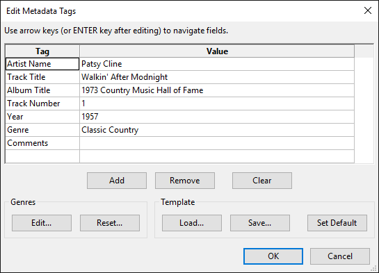

Metadata Tags Editor
Most export formats support at least the seven default tags in Metadata Editor, but support in player applications varies from almost universal for the ID3 tags used by MP3 and MP2 to very limited for WAV. See this Frequently Asked Question for details.
For both MP3 and MP2, only ID3v2.3 tags are exported. ID3v1 can be exported using Cmd-line export.
- Accessed by:'
- 
{kind=link}
- By default, Metadata Tags Editor appears for each exported file after choosing the file format in the Export Audio or Export Multiple dialogs.
- When using Export Multiple, it's often easier to uncheck "Show Metadata Tags editor prior to export step" in Import / Export Preferences, then enter any tags common to all tracks at before exporting. Audacity will then add the automatically generated Track Title and Track Number tags for each exported file without the editor appearing.
- Metadata Tags Editor shows data for the most recently imported track in the project, not the selected track. If you need the editor to show separate data for each track, import the files into separate projects.
- Use the button in Metadata Tags editor to complete the Export. The button only saves an optional template of tag names and values.
Tag and Value fields
- Tag Name: The first seven Tag names are permanent and cannot be edited. You can add more tag rows and give them a customised name and value using the "Add" button (see below).
- WAV files: Some applications such as iTunes will not see tags in WAV files. Some applications such as those made by Microsoft can only read INFO tags in WAV files, in which case the only customised tags they will see will be "Copyright" and "Software".
- Tag Value: Type in the data you want for each tag, or accept the data already present from an imported file. You do not have to fill in every value. When exporting multiple files, the "Track Title" and "Track Number" tags are pre-filled automatically from the names and ordering of the tracks or labels.
Single-clicking on a value field (or navigating into it with the keyboard Arrow keys) selects that field - typing will replace the contents. Tab can be used too, and also permits navigation into the buttons below the Tag and Value fields. Holding Ctrl and pressing Tab moves directly out of the grid and cycles forward through the buttons, and holding Ctrl and Shift and pressing Tab moves out of the grid and cycles backward through the buttons (use Ctrl not ⌘ for these key presses, even on Mac).
- Double-clicking a field (or selecting it, then using keyboard F2) highlights the text in the field. This allows the text to be edited rather than merely replaced, and permits cut, copy or paste using standard system shortcuts or a right-click context menu. Use keyboard Home, End or Arrow keys to navigate to individual characters. Once a value field has been replaced or edited, press the Return key to select the next value field, or click in any other one to select it.
- Add: Adds a new, empty row to the list for your own custom Tag (by default there is already one empty row at the bottom of the list). You can select and edit both the name and value fields exactly as above.
- Remove: Removes the currently selected custom row from the list, or the value data only from the currently selected permanent row.
- Clear: Returns the Editor to default state (seven permanent tag names with empty values, plus one empty row).
Genres
- Edit: Edits the dropdown list displayed in the Value field of the Genre tag. The entire list is selected on open. To navigate it for editing, click the required item or use the keyboard Arrow keys. To add an entry, press keyboard End then type the name you want. The list will be automatically sorted when saved.
- Reset: Resets the genre list to the default.
Template
- Load: Loads a previously saved list of tag names and values into Metadata Editor.
- Save: Saves the current list of tag names and values to a file on your drive.
- Set Default: Makes the current list of tag names and non-empty values the default state whenever opening a new, empty project. To clear the default, press then .
Even if you set a Default, if you import a file containing metadata, that metadata will appear in Metadata Editor. If you always want a fixed set of metadata to show after importing a file, you need to save that set as a template then load the template after importing the file.